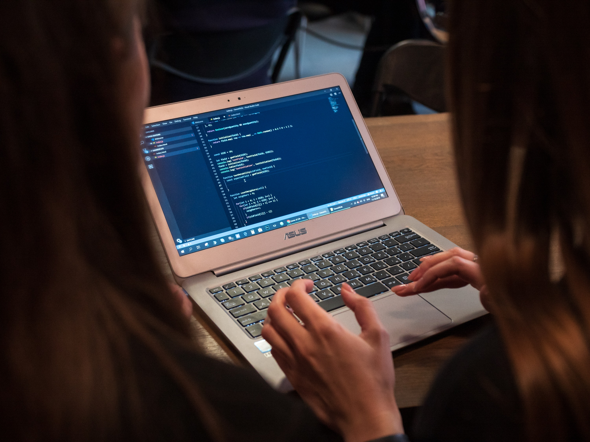
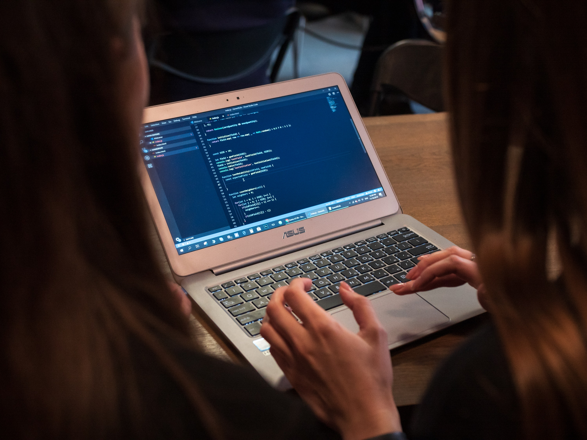

Que es
«Software libre» es el software que respeta la libertad de los usuarios y la comunidad. A grandes rasgos, significa que los usuarios tienen la libertad de ejecutar, copiar, distribuir, estudiar, modificar y mejorar el software. Es decir, el «software libre» es una cuestión de libertad, no de precio. Para entender el concepto, piense en «libre» como en «libre expresión», no como en «barra libre». En inglés, a veces en lugar de «free software» decimos «libre software», empleando ese adjetivo francés o español, derivado de «libertad», para mostrar que no queremos decir que el software es gratuito.
Un programa es software libre si los usuarios tienen las cuatro libertades esenciales: La libertad de ejecutar el programa como se desee, con cualquier propósito (libertad 0). La libertad de estudiar cómo funciona el programa, y cambiarlo para que haga lo que usted quiera (libertad 1). El acceso al código fuente es una condición necesaria para ello. La libertad de redistribuir copias para ayudar a otros (libertad 2). La libertad de distribuir copias de sus versiones modificadas a terceros (libertad 3). Esto le permite ofrecer a toda la comunidad la oportunidad de beneficiarse de las modificaciones. El acceso al código fuente es una condición necesaria para ello.
 
